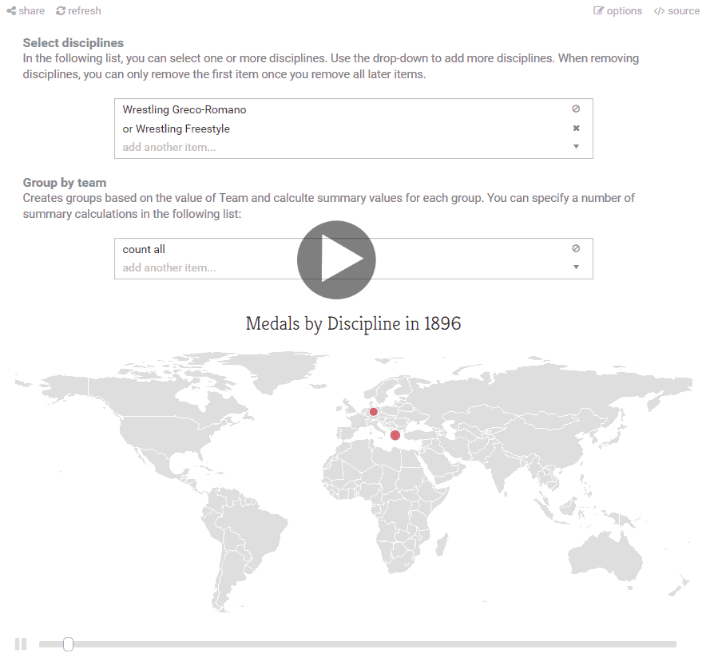
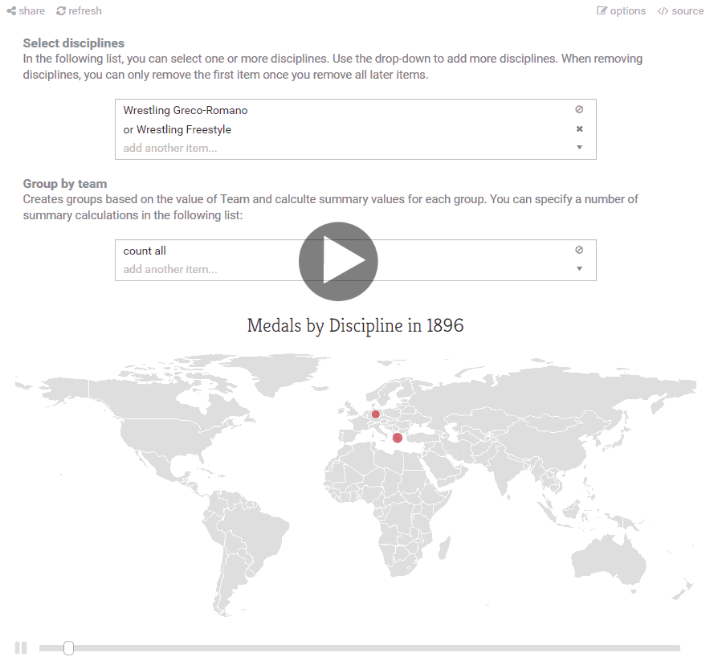
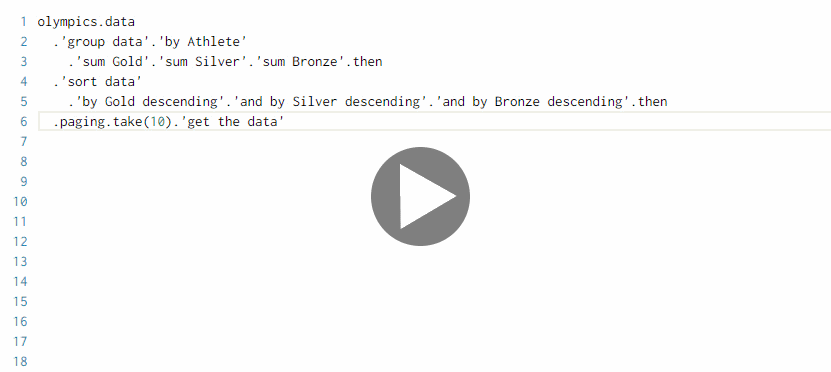
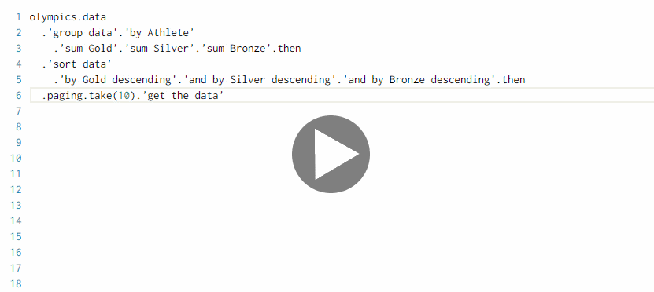

The Gamma — Visualizing Olympic Medalists
Olympic Games are perfect opportunity to do a fun data visualization project - just like New Year, you can easily predict when they will happen and you can get something interesting ready in advance. I used this year's Games in Rio as a motivation to resume working on The Gamma project. If you did not read my previous article, the idea is to build tooling for open, reproducible and interactive data-driven storytelling. When you see a visualization, not only you should be able to see how it has been created (what data it uses & how), but you should also be able to modify it, without much programming experience, and look at other interesting aspects of the data.
The first version of The Gamma project tries to do some of this, using historical and current data on Olympic medals as a sample dataset. You can play with the project at The Gamma web site:

Without further ado, here are the most important links if you want to explore how it all works on your own. However, continue reading and I'll describe the most important parts!
-
TheGamma Script contains implementation of most of the client-side code. In particular, this includes compiler for the language that is used to write the visualizations. It is written using F# and Fable and generates JavaScript using Babel
-
TheGamma Olympics Web is a minimal web site that hosts the visualizations. You can find all the source code for individual visualizations in the docs folder. For example, see medals per athlete.
-
TheGamma Services implements a server-side component that provides data for the client. This serves the cleaned CSV data set using the REST Provider Protocol.
The project is still in early stages and the code needs more documentation (and ReadMe files, I know!) However, if you would be interested in using it for something or you have some interesting data to visualize, do not hesitate to ping me at @tomaspetricek. Also, thanks to the DNI Innovation Fund for funding the project and to the Alan Turing Institute for providing a place to work on this over the coming months!
Innovative data-driven storytelling features
When writing the proposal for The Gamma project, I wanted to create tooling that would encourage people to create open and reproducible data-driven articles. This means that when you see a visualization on a page, it is not just an opaque chart - there should be backing source code behind it that you can understand and modify. This alone is a nice idealistic aim (wouldn't it be nice if all data-driven stories on the internet were reproducible?), but I also wanted to explore other benefits you get from having the source code - in particular, can it allow us to create more engaging and interactive visualizations? You can see these two aims in the Olympic medals demo.
Open and reproducible content
Let's first look at the open and reproducible aspect. When you go to the Olympic Medalists page and choose any visualization, there is a little "source" links, which opens the source code behind the visualization. Here, you can see how the visualization is created and even modify it (on the fly in your browser).
In the example below, I created a very simple visualization that shows medals of Czech Republic together with Slovakia over the history of the Olympic Games (because for most of the history, the two were Czechoslovakia). How exactly is this calculated? Play the animated GIF, or view the visualization on The Gamma page and you'll find out!
(Open the image in a new window)
By looking at the code and changing it a bit, we can learn a number of things about the visualization and also about the data:
-
It turns out that the visualization does not include just Czech Republic, Slovakia and former Czechoslovakia (split in 1993), but also Bohemia! This was a part of Austro-Hungarian empire that competed in the Olympics between 1900 and 1912 and got 4 medals!
-
There are two suspicious spikes in 1964 and 1980. It turns out that Czechoslovakia won football and volleyball team competition in the first one and football and field hockey in the latter. For team events, there is a large number of individual medals.
-
The fact that the visualization is open means that we can easily modify it - by adding
'count distinct Event'we calculate number of events where a medal was won, rather than every single medal - and as you can see, with this change, the two spikes disappear!
Wouldn't it be nice if you could do the same to any online data-driven story? As you can see, even with such simple thing as Olympic medal counts, there are interesting questions that do not have obvious answer and having open and reproducible code behind the visualization makes it possible to get another perspective. It turns out 1964 and 1980 were not magical years for former Czechoslovakia.
Interactive & end-user friendly
Modifying the source code of the visualization and verifying how it has been created might interest programmers, but it's probably not going to make regular readers more interested in open visualizations. However, another nice thing about having source code behind the visualization is that we can automatically analyze the code and look for places where a selected property can be replaced with another available property without breaking the code. I'll explain what exactly I mean soon, but first have a look at the GIF below or explore the Olympic Medals timeline for running and change the events on the map on your own!
 
The GIF illustrates the "options" link that appears for all visualizations on the Olympic Visualizations page. This lets you edit parameters of the visualization in a user-friendly way.
-
In the example, we can edit two lists - the first one specifies all the disciplines that we want to include in the timeline (this is the same structure as the list of all countries to be included in a chart in the previous demo). The editors are linked to corresponding parts of the source code and changing one automatically updates the other.
-
All "options" are automatically generated from code and so this aspect of The Gamma provides additional user-friendly interactivity to any visualization (although making the descriptions nice requires some additional annotations on the types). For lists, we look for call chains in the form
x.A.B.Cwhere the propertiesA,BandCall have the same annotations (and the editor automatically generates drop-down based on the members of the last object in the chain).
Looking behind the cover
There are a couple of technically interesting things behind the demo - I won't go into much detail here, but I would like to briefly mention at least two things. The first is a small language that you can use for writing the visualizations and the second is a type provider for data aggregations (grouping and such).
The Gamma script
In an earlier prototype (see World Bank Carbon Emissions), I used actual F# code for writing the visualizations and then sent the code for compilation to the server - this worked for a prototype, but it is quite slow and inflexible. So, in the new version, the code for the visualizations is compiled into JavaScript on the client-side (although it is pre-compiled for many of the demos to make the loading faster). This means that I wrote a little parser, type-checker and code generator (using Babel). The compiler itself is written in F# and compiled into JavaScript using the awesome Fable project The Gamma might be one of the largest Fable projects around and my experience with Fable was fantastic.
The language itself is pretty minimal as you can see from the AST. I basically only implemented things that were absolutely necessary to get the Olympic Visualizations working - though I do intend to turn this into something more solid once I figure out what exactly it should look like. The demo then uses the Monaco editor for writing code, which works quite well. (And I suspect Monaco can be hacked in interesting ways to make the editing experience feel less like programming and more like filling a spreadsheet.)
There isn't much to be said about the language and the compiler at the moment, but expect to hear more about it soon :-). One very interesting aspect, however, is how the script interacts with the outside world - be it charting libraries or data sources.
Type providers, type providers, type providers
The current version of The Gamma script does not have any libraries (and you also cannot create libraries in it). Instead, everything is done via the type provider mechanism. (If you're not familiar with type providers, check out my talk about type providers in F#.) Just like in F#, type providers make it possible to import external data or libraries into The Gamma script, but in The Gamma, everything is done via type providers.
-
There is an "F# type provider" that makes it possible to import libraries written in F# (and compiled to JavaScript using Fable). This gives you access to the various charting libraries in The Gamma, for example wrapper for Google Charts
-
There is a "REST provider" that makes it possible to import external data. This is what's running when you type
olympicsand start navigating through the data set. The provider uses the REST provider protocol and it communicates with the server-side. For Olympic Medals, this involves this lightweight Suave server.
Incidentally, I wrote a paper about type providers, which advocates type providers as a mechanism for crossing many of the boundaries in interoperation between different environments, so The Gamma just takes this idea a bit further!
Aggregation with the Pivot type provider
If you try doing something with the data and type olympics.data. you will see that the
auto-completion essentially guides you through various aggregation operations that you can perform
over the data. This is the last (and perhaps the most) interesting technical aspect of the project
that I call the "Pivot type provider".
The Pivot type provider looks at the type of the data and, based on the type, provides members for performing valid aggregation operations. This does not let you perform arbitrary aggregations, but it makes the most common ones extremely easy. For example, consider grouping medals by Athlete, calculating the total number of Gold, Silver and Bronze medals and sorting the data by number of medals, which is what the All Time Olympic Medals Table calcultes (it turns out Michael Phelps is at the top).
 
When you type olympics.data, you get a number of options including group data, sort data
and paging (the language uses single quote to escape long identifier names with whitespace) and
you can choose which operation to perform.
-
We start with
group data. The auto-complete next offers the different fields of the data set that we can use as keys for grouping (because the type provider statically knows what columns are available in the original CSV file that it is loading). -
Once we choose the grouping key, we continue by adding aggregation operations. There is a fixed set of aggregations available including
count distinct,sum,averageand a few other. Again, the type provider offers those based on the known fields - and as a bonus, it only lets us sum numerical columns. -
Next, we sort the data. Here, the type provider calculates what column names will be available after the aggregation, so we no longer see all the original columns (say, Team or Event), but only those that actually make sense in the given context!
The Pivot type provider is a step towards more safer and user friendly statically typed data programming, but it also enables the automatic "options" button that generates editors for modifying properties - because the code structure of aggregations written using the pivot provider is very simple.
Looking forward
The Gamma project was awarded funding from the Digital News Innovation Fund and I will be working on it over the next year at the Alan Turing Institute in London, so you will certainly hear more about it again. Here is an assorted list of some of the things that I'm thinking of for the near future:
-
More fun applications! Looking at the Olympic medals made for a nice start and I would like to continue developing the project through practical applications. Do you have some interesting data-driven story? Let me know at @tomaspetricek or tomas@tomasp.net.
-
More spreadsheets, less programming. Writing data aggregations with the Pivot type provider definitely makes programming easier, but I believe that we can do a lot more. What would it take to make the programming experience in The Gamma feel a bit more like working with Excel? (I think better automatically generated "options" and various ideas from live programming are good inspiration.)
-
Cleaning data sources. Another big task for The Gamma is making more data available via type providers. For Olympics, I used a manually cleaned CSV file, so the data access was easy, but ideally, you would like to extract data automatically from various online sources. The HTML type provider does some of this in F#, but could we automatically import, say, all data sets from data.gov.uk?
I believe that being able to explore and understand data is an essential skill in the modern world and I hope that The Gamma project will pioneer some of the ways for making this easier. You should not be a programmer to be able to extract facts that matter to you from the data around you. The Olympic medalists visualization was an early attempt at this — to keep an eye on the future developments, follow @the-gamma on GitHub and @thegamma_net (low-noise) or @tomaspetricek (more noise) on Twitter!
Published: Tuesday, 6 September 2016, 4:37 PM
Author: Tomas Petricek
Typos: Send me pull request!
Tags: thegamma, data journalism, programming languages